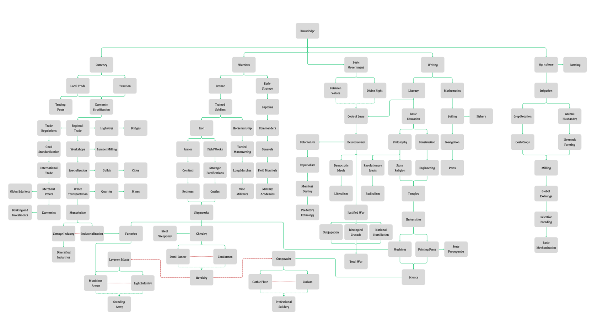

Manual
While the Command & Conquest system may seem complicated at first glance, the game boils down to a few concepts. Each concept will be covered in this Manual; any questions you may have might be addressed by the FAQ or by a moderator.
NATIONS
Each player controls a nation, united by common government, creed, culture, or other socioeconomic factors. These nations consist of Citizens, who contribute to and rely on the nation. Primarily, Citizens contribute to the nation through Production and Taxation while requiring the state to spend Authority to keep them happy and contented. Nations can field Military forces to protect their interests, Economic tools to further their national welfare, Diplomatic agents to ensure the nation’s international respect, and Political authority to keep the nation’s internal workings smooth.
Each nation is displayed uniquely on the Map, using their specific color.
PROVINCES
Provinces are the subnational divisions representing historical, cultural, social, and geographical divisions within the nation. Each province is a separate entity, represented on the Map with an assigned alphanumeric identifier. Provinces also have unique names, which can be altered by the owner as desired. Provinces have assigned Terrain, Trade Goods, Core Owner and Occupier, Citizenry, and Structures.
Terrain represents the average geography within the Province. There are six (6) terrain types, each with unique structures, movement costs, and combat modifiers. See Battle and Sieges for Terrain effects on combat.
- Plains are any combination of grasslands, scrublands, sparse forests, and coastlands. The Plain terrain unique building is the Farm, which increases the Citizenry growth within the province by 5%. A Farm costs three (3) Economic authority to construct.
- Deserts are wide, dry, sand-covered areas, dotted with dunes and the occasional oasis. The Desert terrain unique building is the Trading Post, which increases the value of the local Trade Good of the Province. This building effect replaces any effect gained from a Port in that Province. A Trading Post costs four (4) Economic authority to construct.
- Hills heave earth into rolling formations ranging from small mounds to towering foothills beneath mountain ranges. The Hills unique building is the Quarry, which boosts the Trade Good Production per Citizen by 10% in the Province. This building effect replaces any effect gained from a Manufactory in the Province. A Quarry costs four (4) Economic authority to construct.
- Swamps form festering, damp regions, full of decaying vegetation and brackish water. The Swamp unique building is the Lumber Mill, which reduces the cost of Development boosting by 15% in the Province. A Lumber Mill costs four (4) Economic Authority to construct.
- Mountains tower above the earth, stretching to the sky and providing substantial geographical obstacles. The Mountain unique building is the Mine, which directly adds 0.5 Economic authority to the owning nation. A Mine costs seven (7) Economic authority to construct.
- Arctic land is windswept and snow-covered tundra, inhospitable to all but the most hardy people. The Arctic unique building is the Fishery, which boosts national Taxation effectiveness by 1%. A Fishery costs five (5) Economic authority to construct.
Trade Goods are the local product of the Province. Each Province can produce one of thirty resources, each worth a certain amount of Trade Good Value. The Citizenry of each Province produces units of that Trade Good. There are 30 unique Trade Goods: Tin, Ivory, Glass, Silk, Wool, Iron, Paper, Salt, Cotton, Silver, Tea and Coffee, Rare Wood, Precious Stones, Gold, Raw Stone, Copper, Spices, Coal, Wine, Fish, Tobacco, Sugar, Precious Goods, Fruits, Dyes, Fur, Wood, Chocolate, Livestock, and Grain. Each Trade Good has a given market value, influencing the economic power of a nation (see Trade).
The Core Owner is the owner of the Province, regardless of which nation currently occupies the Province. The Core Owner only changes if a Province is conquered in war, transferred, or abandoned. The Occupier is the nation currently in military and political control of the Province; when not at war, this will always be the Core Owner. Benefits from owning a Province are only conferred if a nation both owns and occupies that Province.
The Citizenry are the members of the Province's permanent population. Each Citizen contributes to the Production of the Province (see Economic Authority) and the Manpower of the Province (see Armies). Citizens grow slowly over time, depending on the Development of the Province.
Structures benefit the Province in various ways. There are four basic structures that are available in any Province: Cities, Forts, Roads, and Manufactories. Additionally, Ports are available for coastal Provinces, Bridges can be built over rivers, and Universities and Temples can be constructed in Provinces with a City. A Capital Province automatically builds a Fort at no cost ot the Structure slot limit. A Province's Structure slot limit increases by one for every ten (10) Development of the Province, with a minimum of one. Every ten Structures requires one (1) Economic authority to maintain. Note that most structures require Technology to unlock.
- Cities are centers of population that provide a Province with a Citizenry growth modifier, a slight defense boost modifier, and a boost to Taxation effectiveness. Each City costs eight (8) Economic Authority to construct.
- Forts are strongholds of military force, allowing a Province to be Sieged. Each Fort has a Defense Level, set by Technology, which determines how many rounds of Siege must be won before the Fort is taken. Forts also block Armies from continuing their invasion until they have been taken. Each Fort costs six (6) Military Authority to construct.
- Roads are infrastructure efforts that allow for the swift movement of goods and people between locations. A Province with a Road allows friendly armies to move out of that Province at half the Movement cost. Each Road costs two (2) Economic Authority to construct. Roads do not negate the movement penalty caused by a river.
- Manufactories are hubs of production and resource exploitation. Manufactories boost the Trade Good Production of each Citizen in the Province by 7%. Each Manufactory costs ten (10) Economic Authority to construct.
- Ports are seaside constructions that concentrate on providing the most efficient infrastructure for the docking, loading, and unloading of merchant vessels and warships. Ports provide a modest boost to the Trade Good Value of a Province, as well as halving the cost of embarking armies. Each Port costs five (5) Economic Authority to construct.
- Bridges are structures that allow armies to traverse a river quickly and easily, without the need for dangerous fording or riverboat crossings. Bridges negate the movement penalty of rivers, as well as greatly mitigate the river attack penalty. Each Bridge costs three (3) Economic Authority to construct.
- Universities are hubs of higher learning, scientific progress, and the search for knowledge. Because of the need for infrastructure and a dense population, Universities can only be built in Provinces containing a City. Universities mitigate the negative effects of an expanding empire on the discovery of new Technology, reducing the territorial penalty by one. Each University costs six (6) Economic Authority to construct.
- Temples are centers of worship for the local population, allowing them to express their culture and traditions. Temples reduce the National Unrest contribution of a Province by 25%. Each Temple costs five (5) Economic Authority to construct.
See the Terrain section of this Manual to read about the unique Terrain structures.
AUTHORITY
Authority is how players make use of their nation’s resources within the game. Each authority type is fixed by certain dynamic features of a nation, rising and falling with the power, technology, diplomatic weight, and other such factors. Each turn, the authority meters are replenished, and users may use any amount of authority each turn. However, it does not accumulate between turns. Any unused authority is lost.
Economic Authority
Economic authority is the measure of a nation’s wealth and prosperity. It is used to construct buildings, recruit new military units, provide public services, and otherwise spend the national wealth. Nations earn Economic authority primarily through Trade, Taxation, and Buildings.
Trade is the most effective source of Economic authority. Each Citizen contributes a certain amount of Production value each turn. A province's Production determines the amount of the local Trade Good produced. Each Trade Good has a market value that fluctuates based on availability and total Production each turn. The total Production of all Trade Goods of a nation multiplied by the market value is a nation's Trade Value, to which each nation has only limited access. Trade Value is gained by signing Trade Pacts with other nations (see Diplomacy). Each nation begins with 5% access, and each Trade Pact increases access by a further 5%. The total Trade Value that a nation has access to contributes to the overall Economic authority of that nation.
Taxation is the most direct source of Economic authority. The average Development (see Development) level of a nation is taxed according to its Tax Level. A nation's base Tax Level is set by their Government Subtype and can only be changed by expending Political authority (see Government and Politics). Take care not to over-tax your Citizens, as doing so will rapidly increase National Unrest.
Buildings and Technology can increase Economic authority. For more on buildings, see Provinces.
Military Authority
Military authority is the representation of the military strength of a nation. It is used to construct defensive buildings, maintain Troops, declare War, recruit Generals, and create new Armies. Military authority is gained primarily from Development and Military Alliances
Military Alliances are the primary sources for Military Authority (see also Diplomacy). Each member of a Military Alliance exponentially increases the amount of Military Authority gained by fellow members.
Development heavily impacts Military Authority gain; the higher the average Development of a nation, the greater the Military Authority gain.
Political Authority
Political Authority is a representation of the national government’s power at home and its influence abroad. Political Authority is used to alter elements of the national government, enter diplomatic relations, change Government Types, and ensure the peace of the realm. Political Authority is gained through Diplomatic Relations, Development, and Technology.
Diplomatic Relations provide Political authority for both member nations on an exponential curve; the more Diplomatic Relations a nation maintains, the greater its Politial authority gain.
Development has a strong impact on a nation's total Political authority. High average Development will provide a nation with plenty of Political authority. However, this is mitigated by National Unrest (see Government and Politics).
DIPLOMACY
Diplomacy is the primary vehicle through which nations communicate their wishes to one another. Each Diplomacy action requires the expenditure of some Authority, generally Political or Military. Diplomatic actions are divided into Cooperative and Hostile actions. Cooperative actions include: establishing Diplomatic Relations, joining a Military Alliance, negotiating Military Access, and opening Trade Pacts. Hostile actions include: issuing Embargoes and Declaring War. A nation cannot maintain both Cooperative and Hostile diplomacy simultaneously.
Cooperative Relations
Diplomatic Relations are peaceful agreements between nations, generally representing recognition of normal relations or national sovereignty. Diplomatic Relations increase a nation's Political authority, but cost one Political authority initially to issue and accept.
Military Alliances align nations together, enabling members to create a defensive or offensive pact against enemies. Such alliances can maintain up to five (5) members, and a nation may only be a member of a single alliance at a time. Military Alliances cost one Political authority to issue and accept; additionally, they cost one Political authority per member per turn to maintain.
Military Access Agreements are agreements that permit members to move their Armies across territory owned by the members without restriction, including landing and embarking troops from their territory. These agreements cost one Political authority to issue and accept.
Trade Pacts establish economic agreements between nations, increasing the Trade Value access for both. Each Trade Pact increases the economic power of a nation. Trade Pacts cost one Political authority to issue and accept; additionally, they cost one Political authority to maintain.
Hostile Relations
Embargoes officially sanction enemy nations, reducing the target's Trade Value access. Multiple Embargoes against a single nation exponentially increase in impact, meaning a global pariah may find itself economically depressed. Embargoes cost one Political authority to issue; additionally, they cost one Political authority to maintain.
Declarations of War are official pronouncements beginning a military conflict between two nations. Each Declaration of War includes a specific Casus Belli; defenders may declare a Defensio Belli. Once war has been declared, Armies from either side may begin marching into enemy territory, capturing provinces, battling, and besieging Forts. Each victory earns War Score, which contributes to the ability of a nation to demand concessions during peace negotiations. For more, see War. Nations in Military Alliances may not declare war on one another. Nations in Military Alliances may call their allies to war, either defensively or offensively.
Subjugation permits some nations to exert their power over others. Subjugation results in the subjugated nation becoming a puppet of its overlord, transferring a fourth of its authority to its overlord (minimum one). Puppets cannot join Military Alliances other than their overlord's and are automatically called into their overlord's conflicts. Subject nations may attempt to declare independence from their overlord, but must then defeat them in war. Overlords may also expend authority to confiscate provinces from their puppets for one (1) Political authority for every ten (10) Development in the Province. Overlords may also force their puppets to conform to their Government Type, for fifteen (15) Political authority, or their Government Subtype (if they are already of the same Government Type), for seven (7) Political authority. Because of the vast resources required to maintain overlordship over entire peoples, nations may only maintain two puppets at any time. Overlords may voluntarily release their puppets at any time, beginning a 12-turn Truce. Subjugation does not cost any Authority to maintain for the Overlord.
GOVERNMENT and POLITICS
No nation can exist without a government to run it. Each nation will have unique approaches to governing its people, and the nations of Command & Conquest are no different. Each nation has government controls that modify Taxataion, Public Spending, Military Upkeep, and Stability. Each also nation has a Government Type and Subtype, each with specific special properties. Nations can alter their Government Type and Subtype voluntarily or through a Civil War or Revolution, which are caused or avoided by properly managed National Unrest and Stability.
Government Modification
Many aspects of government are crucial to the smooth operation of a nation. Each must be carefully balanced to ensure the peace and security of the nation.
Taxation targets the economic wealth of a nation to provide her government with resources to defend, expand, and develop. Taxation provides one of the primary sources for Economic authority (see Economic Authority). Taxation directly increases National Unrest, so keeping it too high for extended periods of time will cause trouble.
Public Spending is a measure of how much a government is willing to invest to ensure that Citizens’ lives are healthy, enjoyable, and productive. Public Spending costs Economic authority each turn to maintain. Public Spending reduces National Unrest on an exponential scale based on the amount of Economic authority invested. Nations may invest up to ten (10) Economic Authority per turn on Public Spending.
Military Upkeep supports the ongoing efforts of every nation to maintain and equip their soldiery. Military Upkeep consumes Military authority each turn to provide a nation’s military with an edge over their opponents and enemies, providing exponential benefits to the fighting ability of each soldier. However, lax Military Upkeep investment will result in a lackluster fighting force. Nations may use up to ten (10) Military authority per turn on Military Upkeep.
Stability represents how safe, secure, and strong a nation is from the perspective of her Citizenry. A nation that has Military Alliances, a strong army, and a healthy economy will encourage more Citizens to immigrate and build families. Stability directly impacts the rate of Citizenry Growth in Provinces. Stability can be boosted by investing up to ten (10) Political authority per turn. Stability cannot be artificially boosted beyond 80 stability.
A Capital Province can be assigned by a nation’s government to centralize their operations and gain the benefits of a Capital Province. A Capital Province automatically builds a Fort in the Province. A Capital Province reduces the cost of Development investment by 15%, increases the Citizen Growth impact in that Province by 10%, and decreases National Unrest by five (5) points. Capturing a Capital Province during a war will grant the Occupier more war score. During National Unrest uprisings, the Capital Province will not be occupied by rebels. Designating a Capital Province costs seven (7) Political Authority and maintaining a Capital Province costs one (1) Political Authority per turn. A Capital Province cannot be designated or changed while at war.
Government Type
Government Type determines several aspects of a nation’s existence. Government Type determines the base gain of Economic, Military, and Political Authority. Additionally, it determines any modifiers to Unrest gain, Manpower access, and Development Cost for Provinces.
| Government Type | Subtype | Economic | Military | Political | Unrest | Manpower | Development Cost | Tax Level |
|---|---|---|---|---|---|---|---|---|
| Tribal | Pre-Feudal | 3 | 4 | 3 | 100% | 10% | 115% | 3% |
| Monarchy | Absolute | 2 | 4 | 4 | 110% | 12% | 100% | 8% |
| Monarchy | Constitutional | 3 | 3 | 4 | 95% | 11% | 100% | 4% |
| Monarchy | Feudal | 3 | 4 | 3 | 100% | 10% | 100% | 6% |
| Monarchy | Theocratic | 1 | 1 | 8 | 100% | 10% | 110% | 3% |
| Monarchy | Elective | 2 | 3 | 5 | 108% | 12% | 95% | 3% |
| Republic | Patrician | 3 | 2 | 5 | 100% | 10% | 95% | 5% |
| Republic | Confederal | 1 | 2 | 7 | 90% | 10% | 105% | 6% |
| Republic | Crowned | 2 | 4 | 4 | 95% | 11% | 100% | 8% |
| Republic | Federal | 4 | 3 | 3 | 95% | 10% | 100% | 5% |
| Republic | Unitary | 2 | 2 | 6 | 95% | 9% | 90% | 6% |
| Republic | Merchant | 8 | 1 | 1 | 105% | 9% | 85% | 3% |
| Republic | Free City | 4 | 1 | 5 | 75% | 8% | 65% | 2% |
| Republic | Technocratic | 5 | 1 | 4 | 110% | 9% | 85% | 6% |
| Democracy | Direct | 2 | 1 | 7 | 85% | 9% | 115% | 5% |
| Democracy | Representative | 2 | 2 | 6 | 90% | 9% | 105% | 7% |
| Democracy | Authoritarian | 3 | 5 | 2 | 110% | 12% | 95% | 8% |
| Democracy | Theocratic | 3 | 1 | 6 | 90% | 9% | 120% | 5% |
| Democracy | Military | 1 | 7 | 2 | 110% | 13% | 100% | 7% |
| Equalism | Tusail | 0 | 2 | 8 | 80% | 8% | 95% | 10% |
| Equalism | Wuxing | 1 | 1 | 8 | 100% | 9% | 95% | 10% |
| Equalism | Populist | 2 | 0 | 8 | 50% | 3% | 150% | 1% |
| Equalism | Nigmatūllic | 2 | 1 | 7 | 105% | 9% | 90% | 8% |
| Equalism | Parish | 5 | 4 | 1 | 65% | 8% | 100% | 2% |
| Equalism | Anarchic | 1 | 1 | 5 | 125% | 2% | 175% | 1% |
| Anarchy | Radical | 1 | 1 | 1 | 200% | 0% | 300% | 0% |
| Anarchy | Green | 1 | 1 | 2 | 150% | 0% | 350% | 0% |
| Anarchy | Postcolonial | 2 | 3 | 1 | 125% | 1% | 400% | 2% |
| Anarchy | Pacifistic | 5 | 0 | 5 | 100% | 0% | 125% | 5% |
Changing between Government Subtypes costs ten (10) Political Authority. Government Subtype can also be changed by Civil Wars of that subtype. Each change of Government Subtype carries a small chance of sparking an Anarchist revolution, modified by the level of National Unrest. Changing between Government Subtypes also increases the National Unrest by 5% for four (4) turns following the change. Government Subtype may only be changed once every five (5) turns.
Changing between Government Types costs one (1) Political Authority for every five (5) average Development of the nation (rounded up), with a maximum cost of twenty-five (25). Government Type can also be changed by rebellions of that Type. Each change of Government Type carries a moderate chance of sparking an Anarchist revolution, modified by the level of National Unrest. Changing between Government Types also increases the National Unrest by 10% for eight (8) turns following the change. Government Type may only be changed once every ten (10) turns. A random Government Subtype is chosen from the eligible list.
Anarchist governments cannot change Government Type or Government Subtype. Equalistic Anarchy does not count as an “anarchist” government.
Nations begin with the “Tribal” Government Type and will be given the ability to switch Government Type once for free after reaching a total Development score of 50.
Additionally, each Subtype has a unique buff, debuff, or ability associated with it. This is also true for the five overall government types, Monarchy, Republic, Democracy, Equalism, and Anarchy. A nation will gain the benefits of both Government Type and Subtype. The “Tribal” Government Type has no Subtype buff, debuff, or ability.
| Government Type | Special Note |
|---|---|
| Monarchy | Capital Province gains an additional Fort level |
| Republic | Cost of Diplomatic Relations reduced by two (minimum cost: 1) |
| Democracy | Cost of Government Modification decreased by two (minimum cost: 1) |
| Equalism | Technology takes one less turn to research (minimum turns: 2), enemies can declare war for free |
| Anarchy | Civil War chance reduced by 100%, Revolution chance increased by 25% |
| Government Type | Subtype | Special Note |
|---|---|---|
| Monarchy | Absolute | Cost of Forts reduced by one |
| Monarchy | Constitutional | Unrest impact on Political Authority reduced by 10% |
| Monarchy | Feudal | Recruiting Generals does not cost Military Authority |
| Monarchy | Theocratic | Cost of Temples reduced by two |
| Monarchy | Elective | Likelihood of Civil War reduced by 25% |
| Republic | Patrician | Cost of Cities reduced by one |
| Republic | Confederal | Colonization cost reduced by one |
| Republic | Crowned | Cost of Government Modification reduced by one |
| Republic | Federal | Base Trade Good Value access set at 20% |
| Republic | Unitary | Taxation Unrest impact reduced by 10% |
| Republic | Merchant | Cost of Ports reduced by two, cannot issue Embargoes |
| Republic | Free City | Cannot build multiple cities, Citizen growth boosted by 25%, base Overextension set at 20 |
| Republic | Technocratic | Technology takes one less turn to research (minimum: 4) |
| Democracy | Direct | Likelihood of Civil War reduced by 75%, cannot declare war |
| Democracy | Representative | Political technology takes two less turns to research (minimum: 4) |
| Democracy | Authoritarian | Capital city receives three base Fort level, Puppet Management costs reduced by 1 (minimum: 1), cannot receive diplomatic relations |
| Democracy | Theocratic | Cost of Temples reduced by two, cost of Government Modification increased by one |
| Democracy | Military | Military technology takes two less turns to research (minimum: 4) |
| Equalism | Tusail | No Economic Authority, cannot Colonize, Structures cost Political Authority, Recruitment costs Military Authority, Cost of Roads and Bridges reduced by one |
| Equalism | Wuxing | Cannot use Government Modification, cannot build Universities, cannot designate a Capital, Citizenry contribute 75% more to Trade Good Production, Colonization costs 50% less political power |
| Equalism | Populist | Cannot declare war, cannot use Government Modification, Bridges and Roads cost 50% less Economic Authority, Citizenry consumes 50% less Political Authority |
| Equalism | Nigmatūllic | Cost of Temples reduced by one, cannot build Forts |
| Equalism | Parish | Citizenry Trade Good Production increased by 50%, cannot use any voluntary diplomatic interaction, cannot use Government Modification, Political Authority Development cost reduced by 25% |
| Equalism | Anarchic | Cannot take any action except declare war on non-Equalist nations and accept diplomatic interactions with other Equalist nations |
| Anarchy | Radical | Cannot take any action except build Structures, invest in Development, and research Technology |
| Anarchy | Primitivist | Cannot take any action except build Structures and invest in Development. |
| Anarchy | Postcolonial | Cannot take any action except build Structures, invest in Development, research Technology, declaring war on any non-Equalist, non-Anarchic nation, and diplomatic interactions with any Equalist or Anarchic nations |
| Anarchy | Pacifistic | Cannot make any diplomatic interaction except Diplomatic Relations, cannot Colonize, and cannot maintain any troops or Military Authority |
National Unrest & Internal Conflicts
Citizens who are ignored, slighted, abused, or simply unhappy will eventually rise up against their government and seek to overthrow or alter it in their favor. Nations must manage their National Unrest in order to assuage (or encourage) such violence.
National Unrest represents the unhappiness and outrage of Citizenry within a nation. High National Unrest is an indication that the current government and policies are causing the Citizenry of a nation to foment a possible rebellion against the government. High National Unrest could result in a Rebellion, Revolution, or Civil War, all of which have negative consequences. National Unrest also has debuffing effects on national resources, such as Citizenry Growth, Manpower, and Trade Good Production. National Unrest is raised by high Taxation and is reduced by Public Spending.
Rebellions, Civil Wars, and Revolutions are armed conflicts wherein the Citizenry of a nation attempts to take the reins of power or alter some aspect of a nation. These conflicts will result in at least half of all Provinces in a nation being occupied by rebel forces. Rebels will occupy a certain percentage of a nation’s Provinces based on the National Unrest level. Rebels will appear in strength proportional to the National Unrest level. If a nation has more than 20% of its Provinces (minimum 5) occupied by rebel forces for more than six turns, the rebels declare victory, and the government is overthrown according to the nature of the conflict.
A Rebellion is a violent attempt by the Citizenry to enforce their demands on the Government. A Rebellion can occur when National Unrest is at or above 50. If a Rebellion is successful, the national Taxation level will be reduced to 5%, the Manpower level will be reduced by 10%, each Authority will be reduced by one, and Government Modification will be disabled. These effects will last for ten (10) turns.
A Civil War is an attempt by the Citizenry to alter the Government Subtype of a nation. A Civil War can occur when National Unrest is at or above 65. If a Civil War is successful, the Government Subtype will be changed according to the type of Civil War sparked. Civil Wars can only alter the Subtype within the current Government Type of the nation. Additionally, each Authority will be reduced by two (2) for four (4) turns.
A Revolution is an attempt by the Citizenry to alter the Government Type of a nation. A Revolution can occur when National Unrest is at or above 70 or when changing Government Type or Subtype. If a Revolution is successful, the Government Type will be changed according to the type of Revolution sparked. Additionally, each Authority will be reduced by two (2) for five (5) turns. Revolution is the only method by which a nation may become Anarchic or remove the Anarchic government type.
\WAR
When diplomacy has failed, it becomes necessary for nations to arm their citizens, march onto the battlefield, and make war against their enemies. In Command & Conquest, making war is an integral part of gameplay. Nations maintain Armies with assigned Troops and Generals which are used to fight enemy forces, besiege Forts, and capture Provinces. Once the war is complete, the combatants must complete Peace Negotiations to end the conflict.
Declaring War]
When a nation must declare war, it must declare a Casus Belli to justify the war and give it direction. Each Casus Belli provides bonuses to war score based on specific actions during the war, falling into three categories: capturing provinces, winning battles, and successful sieges. Each Casus Belli also has a purpose, which helps the nation decide which option to choose. All Casus Belli, however, have limitations that prohibit victors from demanding specific negotiations. Defenders may declare a Defensio Belli in return to gain war score.
| Casus Belli | War Goal | Purpose | Notes |
| Conquest | Capture Provinces | Take Provinces | Force Government Type prohibited |
| Subjugate | Capture Provinces | Subjugate nation | Force Government Type prohibited |
| Indoctrinate | Win battles, capture Capital | Force Government Type | Take Province, Subjugate prohibited |
| Force Reparations | Win battles | Demand Reparations | Take Province, Subjugate, Force Government Type prohibited |
| Humiliate | Capture Capital, win battles | Reduce GP score Increase Unrest |
Take Province, Subjugate, Force Government Type prohibited |
| Trade Conflict | Win battles | End Embargo Steal Authority End Trade Pacts |
Take Province, Subjugate, Force Government Type prohibited |
| Rebel Against Overlord | Win battles, capture Capital | Gain independence | Take Province, Subjugate, Force Government Type prohibited |
| Force Independence | Win battles, capture Capital | Force Overlord to release Puppet | Take Province, Subjugate, Force Government Type prohibited |
| Suppress the Revolution | Capture Capital, win battles | Overthrow Equalist government | Take Province prohibited Non-Equalist/anarchist nations only |
| Spread the Revolution | Capture Capital, win battles | Install Equalist government | Take Province prohibited Equalist nations only |
| Total War | Capture Provinces, win battles | Dismantle nation | Force Government Type prohibited |
Defenders can choose the unique Status Quo Defensio Belli, which seeks to end the war without significant alterations. The Status Quo has no War Goal and does not provide increased war score for victories. However, Status Quo provides a ticking increase in War Score every Turn while the attacker’s War Score stays below 60%.
Peace Negotiations
When belligerents wish to end their war, they must enter Peace Negotiations. Peace Negotiations between the War Leaders will end the war for all participants; Peace Negotiations between one War Leader and other members will end the war only for that nation. Peace Negotiation demands targeting co-belligerents rather than a War Leader cost twice as much. Peace Negotiations can demand any combination of options that are not prohibited by the Casus Belli. Should the War Score of the primary War Leader reach 100%, demands issued by that War Leader to their opposing War Leader shall be automatically accepted. However, demands in an automatic Peace Negotiation cannot exceed the War Score. Co-belligerents cannot be forced to accept a Peace Negotiation.
War Score is a representation of how well (or poorly) a war is going for either side. Each Casus Belli and Defensio Belli has a War Goal, which designates certain victories during the war as more valuable than others. Every victorious Battle, captured Province, and successfully besieged Fort increases the War Score. Achieving War Goals, however, increases the War Score earned from that victory.
Truces are periods during which nations agree to cease all hostile action. During a Truce, nations may not declare war without incurring a serious National Unrest penalty and the severing of all Diplomatic Relations. Truces are calculated based on the War Score at the end of a conflict; every 10% War Score will add another turn to the Truce duration, with a minimum of two turns. Additionally, each Peace Negotiation adds another four (4) turns to the Truce duration. The Subjugate and Dismantle Peace Negotiation options carry a flat 20-turn Truce and 28-turn Truce, respectively.
Durations of Truces determine the number of turns that Peace Negotiations are enforced. End Embargo, End Military Alliance, and End Trade Pacts restrict the target from starting new Embargoes, Military Alliances, or Trade Pacts, respectively, for six (6) turns or the length of the Truce, whichever is shorter. Demand Reparations lasts for the duration of the Truce or twelve (12) turns, whichever is shorter. Humiliate effects last for sixteen (16) turns, and Dismantle effects last for twenty (20) turns.
| Peace Negotiation | Outcome | War Score Cost |
| White Peace | Establishes a Status Quo Ante Bellum | None |
| Cede Province | Transfers Core Ownership to War Leader | 0.5% per Development |
| Give Province | Transfers Core Ownership to specified nation | 1% per Development |
| Demand Reparations | Takes up to six of any Authority each turn | 5% per Authority taken |
| End Embargo | Ends an existing Embargo by the target nation | 10% war score |
| End Military Alliance | Forcibly removes target nation from an existing Military Alliance | 15% war score |
| End Trade Pacts | Forcibly ends all Trade Pacts for the target nation | 20% war score |
| Subjugate | Forcibly Subjugates the target nation | 2% per Development (minimum 25%) |
| End Overlordship | Forcibly ends any Overlordship by the target nation | 20% war score |
| Force Government Type | Forcibly alters the target’s Government Type (not Subtype) to the War Leader’s Government Type. A random Subtype is selected. | 50% war score |
| Humiliate | Reduces Great Power Score by 100, decreases stability by 35, and increases National Unrest by 25. | 75% war score |
| Dismantle | Reduces army size cap, prohibits Colonization, prohibits Government Modification, reduces each Authority by three | 90% war score |
Battles and Sieges
Battles occur when two warring nations bring their armies together in the same Province. Whichever nation moves an Army into the Province is considered the attacker, while the Army already within the Province is considered the defender. During a Battle, the attacker’s army must engage in Skirmishes, based on the Terrain of the province. Flat, open Terrain only requires the base number of skirmishes, determined by the level of the defending General or one (1), whichever is greater. Rocky, snowy, or swampy Terrain will exponentially increase the number of skirmishes required. Each roll will randomly select one of the terrain(s) of the province for the skirmish to occur in, if applicable. For example, one skirmish may take place on the Plain while another may take place in the City. Roll outcomes are randomly generated but are affected by several factors and determine the win or loss of the skirmish. The attack power of the attacking Army, modified by Technology, increases the attack roll. Likewise, the defense power of the defending Army, modified by Technology, increases the defense roll. More defensible Terrain provides additional benefits for the defending Army. Disparate Army sizes involved in the battle will also affect the outcome; a large Army will gain exponentially greater advantage when fighting a small Army. Whichever Army wins the greater number of skirmishes will win the battle, gaining War Score for themselves. The losing Army will be forced to Retreat to the nearest friendly Province possible. Attacking Armies retreat to the Province where they attacked from; defending Armies retreat at least three (3) Provinces away. An Army that cannot Retreat is considered overrun and is destroyed. When multiple armies are present, the attacking army will engage all defensive armies in the same battle; the defenders will make use of the General of the largest army. When multiple armies are present, inflicted casualties are divided among the armies evenly.
Casualties are inevitable when two Armies battle and account for killed, wounded, and captured soldiers. Casualties are calculated based on the attacking and defending rolls of each Army. The higher the roll, the greater the number of Casualties. In addition, the Terrain of the Province wherein the Battle takes place increases the potential Casualties taken by either side, weighted in favor of the defender. Defenders are not affected by Casualty modifiers produced by Structures. Should an Army take more than 80% of its original strength in Casualties, it is considered annihilated and scattered, destroying it.
Sieges occur in occupied Provinces with Forts. A Fort blocks Armies from leaving a Province towards another unoccupied or unowned Province until its Fort level is reduced to zero (0). An Army may choose to retreat from a province with a Fort to a friendly province, but doing so will immediately revert control of the province to the Fort’s owner. When a Siege commences, it functions as a Battle, except that the unique Fort Terrain modifiers are applied to the Battle. The defending army is calculated based on the Fort Level, total Manpower of the defending province, and the Development of the Province. If a Fort beats back the Siege, the attacking Army will suffer casualties and lose 0.5 Movement. If a Fort falls to a Siege, its Defense Level is reduced to one (1) until the conclusion of the war. There is a small chance that Generals with high Siege level will destroy Forts upon capturing them. Likewise, Armies equipped with the Gunpowder Technology have an increased chance of destroying a Fort upon capture.
COLONIZATION and OVEREXTENSION
In the great game of empire-building, there comes a time when the empire must expand beyond its own borders and spread civilization to the lands nearby. Colonization allows for nations to expand beyond the borders they have set for themselves. Initially, nations may conquer territory surrounding their starting location up to fifteen (15) Provinces. Once they have reached that size, nations cannot directly conquer any surrounding unowned territory. Instead, they must research the Colonialism Technology. Colonization costs one Political authority, one Economic authority, and one Military authority. For every five (5) provinces beyond twenty (20), the cost of Colonization increases by one authority to a maximum of ten (10), except when modified by other conditions. Certain Technology will reduce the cost of Colonization. When a Province is Colonized, it begins with a total Development of three (3); certain Technology will increase the starting Development of a Colonized Province.
Overextension occurs when a nation maintains more Provinces than its government bureaucracy can effectively handle. The base Overextension limit is 45; Technology can increase government efficiency and thus the Overextension limit. Great Powers earn an additional 15 Overextension limit. Every Province over the Overextension limit will generate an exponentially larger amount of National Unrest and increase the cost of Development boosting and other actions.
TECHNOLOGY and RESEARCH
Technology is the avenue through which nations expand their economic, political, and military advantages over their enemies and neighbors alike. Technology allows nations to increase their Army capacity, unlock Government Types, discover new Structures, and much more. Investing in Research is a crucial strategy for any nation wishing to not only advance its power but also maintain its strength. Base Research speed is four (4) turns, but this is modified by the Development of the nation; every ten (10) Development average increases Research time for all Technology by one (1) turn. Government Types and Subtypes may boost Research time for Technology. However, Researching has a floor and cannot take fewer than four (4) turns.
